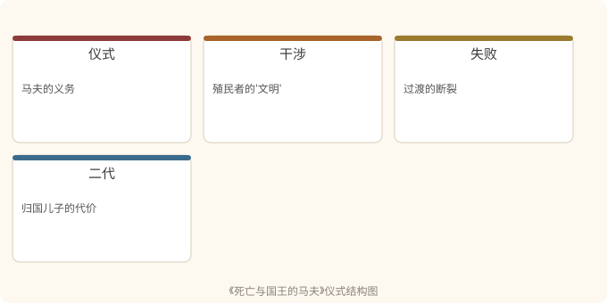

死亡与国王的马夫
一、基本信息
| 作者 | 沃莱·索因卡 |
|---|---|
| 成书/出版 | 1975年出版/上演（Britannica：Death and the King's Horseman (1975)） Wole Soyinka — Encyclopaedia Britannica（百科全书） |
| 国别/地区 | 尼日利亚 |
| 时代 | 现当代 · 20世纪 |
| 体裁 | 悲剧（话剧） |
| 语言 | 英语（约鲁巴语境） |

《死亡与国王的马夫》仪式结构图（主题·结构图）
二、创作背景
Britannica：索因卡为'first Black African winner of the Nobel Prize for Literature in 1986'，授奖词称其作品'vivid, often harrowing'、'marked by an evocative, poetically intensified diction'（B247）。
题材：约鲁巴仪式性自杀传统与殖民当局的干涉（通说待核）。
作者：戏剧'blend Western techniques with Yoruba folklore'（B247）；1967—69年因比夫拉战争言论入狱（B247）。
三、内容脉络
约鲁巴国王的马夫艾雷辛须在国王下葬后自尽护送——殖民区行政官皮顶斯以'阻止野蛮习俗'之名干涉（通说待核）。
死亡仪式的失败与'过渡'的失败（通说待核）。
四、主要人物表
| 人物 | 身份 | 说明 |
|---|---|---|
| 艾雷辛（Elesin） | 国王马夫 | 仪式执行者（通说待核） |
| 皮顶斯（Pilkings） | 殖民行政官 | 干涉者（通说待核） |
| 奥伦蒂 | 儿子 | 在英国归来（通说待核） |
五、主题与艺术特点
- 仪式、共同体与个体的责任（通说待核）。
- 殖民干涉与'文明'的傲慢（通说）。
- 生死'过渡'（transition）的形而上（通说待核）。
六、影响与评论
- Britannica：首位黑非洲诺奖得主；作品'vivid, often harrowing'（B247）。
Wole Soyinka — Encyclopaedia Britannica（百科全书） - 后殖民戏剧的经典文本（通说待核）。
Wole Soyinka — Encyclopaedia Britannica（百科全书）
七、阅读建议
难点
- 约鲁巴宇宙观与奥甘诸神注释。
- 诗性行白的节奏。
- 英文原版（Methuen，通说待核）。
- 中译本信息待核。
对照《瓦解》：殖民遭遇的两种写法。
八、待核实
- 艾雷辛/奥伦蒂人名与史实原型（1943年约鲁巴事件说）待核。
- 四幕结构与'过渡'主题评论待核。
- 皮顶斯夫妇化装舞会情节核对。
本页主要来源
沃莱·索因卡的其他收录作品：死亡与国王的马夫